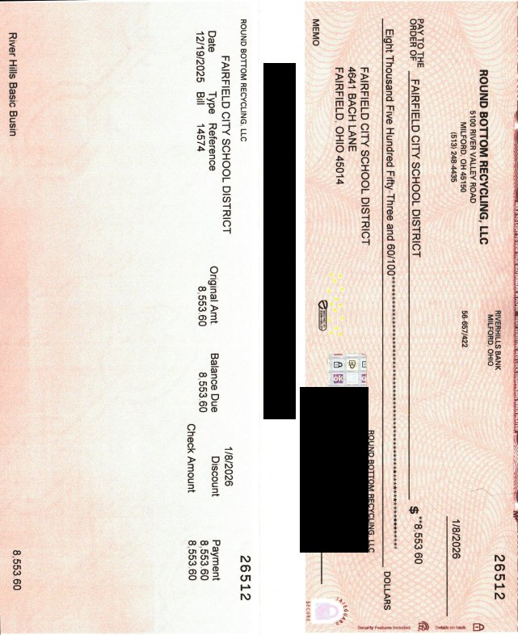
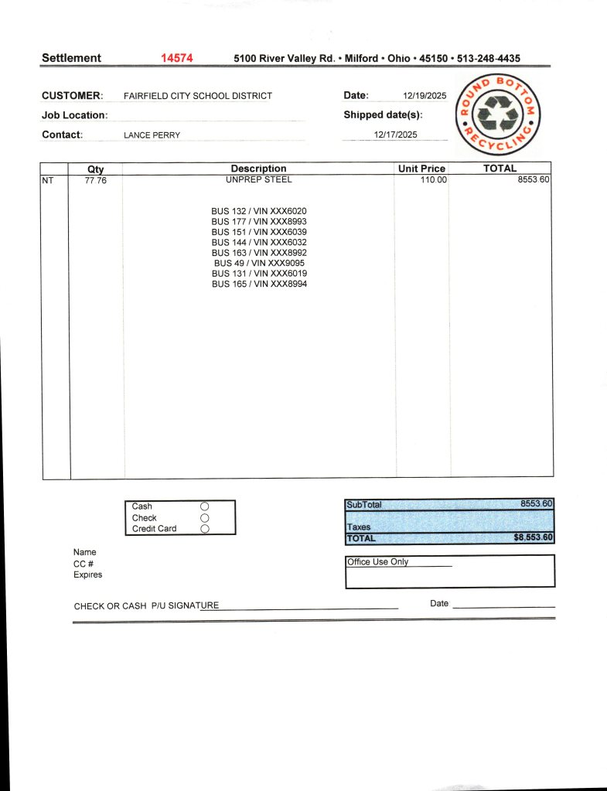

Source exhibit
fairfield city school district- buses 12.19.2025.pdf
Source SHA-256: 1602f704624531a5af3a499d187feda339a1f48ceb0d6e87b1b4ce62ef699f6b
Page 1

Public image derivative: check MICR/account information and handwritten signature redacted. Amount, payer, date, and transaction references retained.
Page 2
